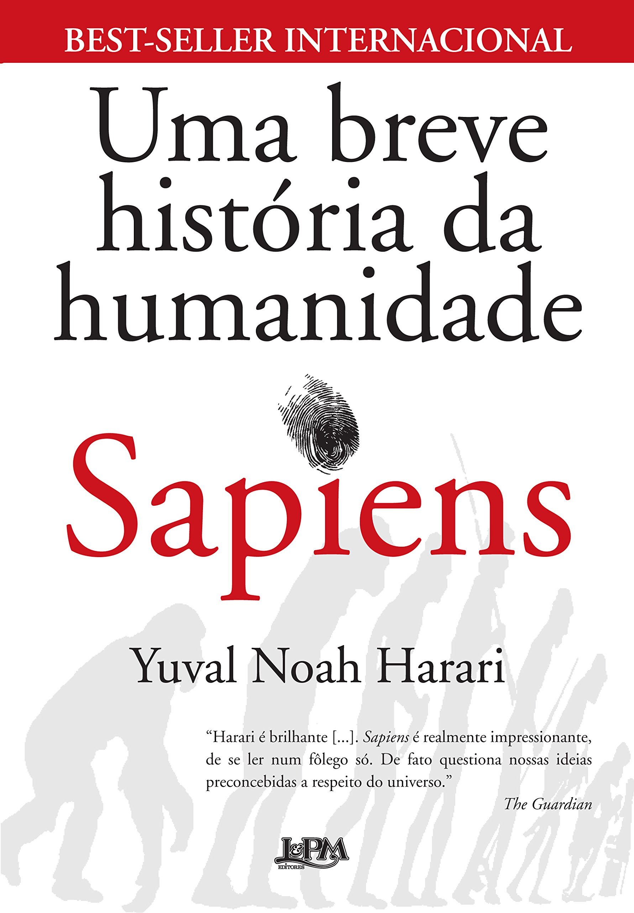
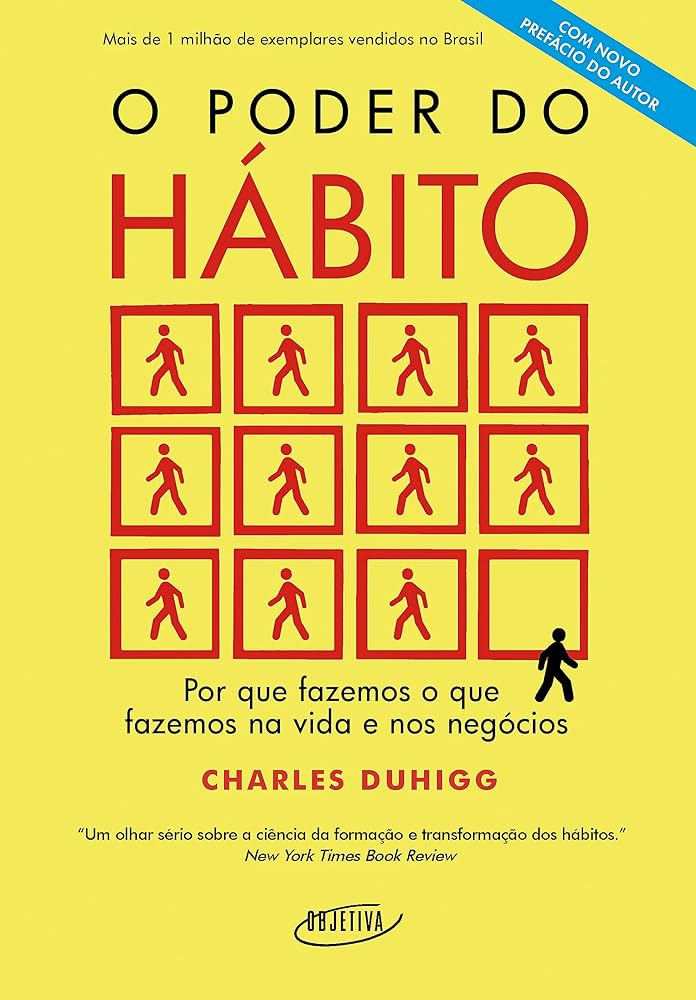

Livros de Não-Ficção
1. Sapiens: Uma Breve História da Humanidade

Escrito por Yuval Noah Harari, Sapiens explora a história da humanidade desde a Idade da Pedra até o século XXI, analisando como a biologia e a história moldaram a sociedade moderna.
2. O Poder do Hábito

Charles Duhigg investiga a ciência por trás da formação de hábitos e como eles podem ser mudados, oferecendo insights sobre como transformar a vida pessoal e profissional.
3. A Arte da Guerra

Este clássico de Sun Tzu é um tratado sobre estratégia militar que também é aplicado em negócios e vida pessoal, enfatizando a importância do planejamento e da adaptação.